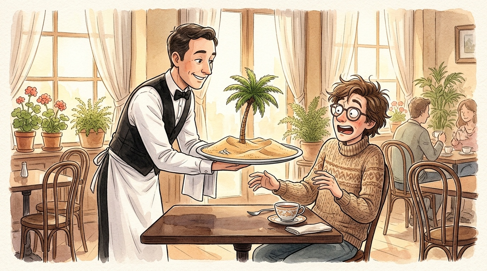
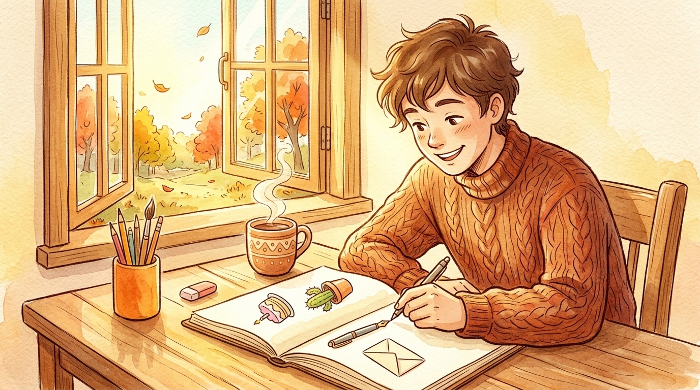

为什么学了十年英语，还是分不清 Dessert 和 Desert？7个画面联想，3分钟彻底治好易混词！
Why Can't We Tell "Dessert" and "Desert" Apart After 10 Years of English? 7 Visual Hooks to Master Confusing Words in 3 Minutes
【序言导读】 英语里有一批最让人头疼的“双胞胎单词”：它们拼写几乎一模一样，读音极其相似，只差那么一个字母。可一旦在聊天、写邮件或考场上把它们用混了，轻则丢掉关键分数，重则当场闹出让人笑到拍桌子的乌龙！
English is packed with notorious "twin" words—pairs with nearly identical spelling and pronunciation, separated by just a single sneaky letter. Yet mix them up in a chat, email, or exam, and you risk losing easy points—or triggering a hilarious misunderstanding on the spot.
今天，我们一次性盘点 7 组 90% 的英语学习者都踩过坑的易混词，每组都配上一个“看一眼就一辈子忘不掉”的神级记忆法！
Today, let us conquer 7 notoriously confusing English word pairs that trip up 90% of learners—each armed with a one-glance memory trick you will never forget.
💥 翻车现场 / The Blunder
在西餐厅吃完主菜，优雅地对服务员说 "I'd like a chocolate desert, please."（“请给我来一份巧克力沙漠。”）
💡 一眼记牢法 / Memory Trick
甜点（Dessert） 太好吃了，所以人人都想要两份（两个 s，就像 two scoops of ice cream）；
Dessert is so delicious that everyone wants two helpings (two s's—like two scoops of ice cream).
而沙漠（Desert） 荒凉又干燥，孤零零的只有一个 s。
Desert, by contrast, is dry and lonely—so it only has one s.

少写一个“s”，美味的巧克力甜点瞬间变成烈日炎炎的撒哈拉沙漠
Drop a single "s," and a decadent chocolate dessert turns straight into a scorching desert.
💥 社死现场 / The Blunder
周末在家没事干，发微信跟外国朋友吐槽 "I am so boring!"——对方听到的其实是：“我这个人超级无趣、特别无聊，别跟我玩！”
💡 一眼记牢法 / Memory Trick
-ed 结尾 描述的是人的内心感受（I am bored. 我感到无聊）；
Words ending in -ed describe how a person feels (I am bored).
-ing 结尾 描述的是事物或人本身令人产生的特质（This movie is boring. 这部电影真无聊）。
Words ending in -ing describe the quality of something or someone (This movie is boring).
💥 翻车现场 / The Blunder
发朋友圈立减脂 Flag，激情打下 "I'm going to loose weight this month!"（字面意思变成了：“我这个月要把体重变松！”）
💡 一眼记牢法 / Memory Trick
Lose 既然是“丢失”，它自己就丢掉了一个 o；
Lose literally lost an "o", which is why it means to misplace or fail to win.
Loose 里面塞了两个 o，撑得空间太大，所以是“松垮的”（比如 loose jeans 宽松牛仔裤）。
Loose has two "o"s, giving it extra room to hang loosely.
💥 考场重灾区 / Exam Trap
中高考、四六级、雅思托福年年必考的头号易错组合！
💡 一眼记牢法 / Memory Trick（记住 RAVEN 法则）
Affect = Action（动词，表示施加影响的动作，如 The weather affected our plans. 天气影响了我们的计划）。
Affect stands for Action (a verb, as in The weather affected our plans).
Effect = End result（名词，表示最终的结果或效果，如 The medicine had a great effect. 这药效果很好）。
Effect stands for End result (a noun, as in The medicine had a great effect).
💥 翻车现场 / The Blunder
写评语想夸同事“非常专业” quite professional，手滑敲成 quiet professional（沉默寡言的专业人士？）。
💡 一眼记牢法 / Memory Trick
Quiet 结尾是 et，读起来有两个音节（kwai-ət），像是在图书馆里轻声说“安静”；
Quiet ends in -et and has two soft syllables, like a hush in a library.
Quite 结尾是 te，单音节干脆利落（kwait），表示“相当、十分”（如 quite good 相当不错）。
Quite ends in -te—one crisp syllable meaning "very" or "fairly."
💥 微妙陷阱 / Subtle Trap
两个词读音几乎完全相同，拼写也只差中间的 i 和 e。
💡 一眼记牢法 / Memory Trick
I love receiving a compliment——带 i 的是赞美（每个“我 I”都爱听夸奖）；
I love getting a compliment—the "i" reminds you of praise.
Complement 就像 complete（使完整）——带 e 的是互补、相得益彰（如 Red wine complements steak. 红酒配牛排相得益彰）。
Complement shares the "e" with complete—meaning two things complete each other beautifully.
💥 职场乌龙 / Office Blunder
行政采买发邮件写 "We need to order more stationary."（“我们需要多订购一些静止不动。”）
💡 一眼记牢法 / Memory Trick
Stationery 里的 e = envelope（信封）和 pen（钢笔）——统统都是文具；
The "e" in stationery stands for envelope and pen.
Stationary 里的 a = standing still（原地站着不动）——表示静止的。
The "a" in stationary stands for standing still.

用画面感和联想代替死记硬背，再像的双胞胎单词也能一眼分清
Replace rote memorization with vivid imagery, and even the trickiest twin words become crystal clear.
【结语：记单词别靠死背，靠“画面联想”】
英语里这些长得像双胞胎的单词，靠机械抄写十遍往往还是会忘；但只要你给它们装上一个有趣的“画面钩子”——比如甜点想要两份 s、lose 丢掉了一个 o、文具里有 e（envelope）——你的大脑就会一秒锁死它们的区别。
Trying to conquer these twin words by copying them ten times rarely sticks. Yet the moment you attach a playful visual hook—two scoops of dessert, lose losing an "o," or envelopes in stationery—your brain locks in the difference for good.
快把这份速查清单转发给正在背单词的孩子或朋友，以后再也别把“甜点”点成“沙漠”啦！
Share this cheat sheet with a friend or student—and never accidentally order a chocolate desert again!
📌 7 组易混词一秒记忆速查卡
1. Dessert（甜点，两份 s） vs. Desert（沙漠，一个 s）
2. Bored（人感到无聊 -ed） vs. Boring（事物令人无聊 -ing）
3. Lose（丢失，丢了一个 o） vs. Loose（松垮，两个 o）
4. Affect（动词 Action） vs. Effect（名词 End result）
5. Quiet（安静 -et） vs. Quite（相当 -te）
6. Compliment（赞美，我 I 爱听） vs. Complement（互补，像 complete）
7. Stationery（文具，envelope） vs. Stationary（静止，standing）